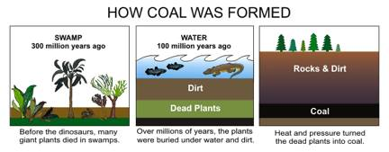
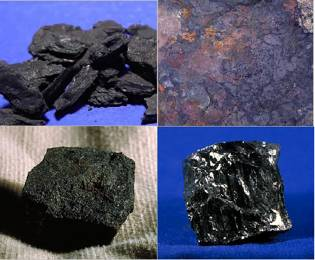
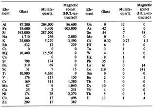
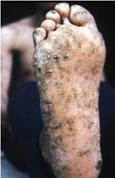

| METALS IN MEDICINE AND THE ENVIRONMENT | |||
| Metals | Coal and Its Effects on the Environment | ||
|
The Formation of Coal (1) Coal is a black (sometimes brownish-black) sedimentary rock composed mainly of carbons and hydrocarbons and can also contain other elements depending upon the region where it was mined. It is a nonrenewable source of great energy due to the contents and conditions of its formation over hundreds of millions of years. Coal started to form about 300 million years ago when large plants, which existed before the dinosaurs, began to die due to swamps forming around the earth. The swampy slush of dead plants then began to accumulate dirt and water over 100 million year ago with animals and other plants coexisting on top of it. Over time, the dead plants were converted to coal due to the extreme pressure from the water, dirt, and heat from the earth, allowing for the tremendous amount of energy from the dead plants to be stored into the form of coal.  Classes of Coal (1) The amount of energy stored in coal is known as the its heat-producing value (or heating value) and is used to categorize coal into four main classes. Lignite is the lowest ranking coal with the least amount of energy. It is a relatively young coal that is usually 25 to 35 percent carbon, and it is often crumbly with a high moisture content. Lignite is the type of coal mainly used to generate electricity in power plants and accounts for about 7 percent of the coal in the United States. Subbituminous coal gives a greater of energy than lignite; therefore, giving it a higher heating value. It is composed of about 35 to 45 percent carbon. This type of coal accounts for about 44 percent of the coal in the United States and is at least 100 millions years old. Anthracite has a heating value twice that of subbituminous coal and only accounts for half of a percent of coal in the United States. This type of coal is also crumbly and can be hard to ignite. Anthracite is composed of 86 to 97 percent carbon and very expensive to use due to its rarity. Bituminous coal has a heating value of two to three times greater than lignite. This type of coal is 45 to 86 percent carbon and accounts for about half of the coal in the United States. It is between 100 and 300 million years old and is also used to generate energy. It is particularly useful as a fuel and raw material for the steel and iron industries.  The United States contains the largest known coal reserves in the world and only about 4 percent of the coal mined in the United States is exported to other countries. Coal ConsumptionThe most obvious use of coal is for the production of energy at electrical power plants and accounts for about 80 percent of the coal mined in the United States. The electrical coal power industry supplies energy to about 50 percent of the United States. (2) Coal is also used as a raw material to make coke, which is made by baking coal in hot furnaces at extremely high temperatures. Coke is utilized by the steel industry to smelt iron ore into iron, which is essential to the production of steel and gives steel its strength and flexibility. (1) The production of coke for the steel industry accounts for about 10 percent of the coal consumed in the United States. (2) The rest of the coal consumed in the United States is due to industrial consumption to make a variety of products, such as plastics, tar, and synthetic fibers, with a tiny amount of consumption used commercially and residentially. (1, 2) All of these sectors of coal consumption can therefore contribute to the release of elements and compounds into the environment. Environment Effects from Burning CoalWhether coal is consumed in one of the ways mentioned above or by beds of coal burning in the earth, there are still chemical species that can come out of the coal and into the atmosphere. The major concern of coal burning is the production of carbon dioxide, a major greenhouse gas that contributes to global warming. However, looking past this issue and into the composition of the fly ash from the coal there can also be trace elements that can affect the environment. According to a study done by the Oak Ridge National Laboratory, fly ash from four coal power plants in Tennessee were tested and analyzed for chemical species.  Table 1 shows the results of the tests conducted and it was concluded that there are many trace elements found in the fly ash of coal which can be potentially harmful to the environment. The tests were conducted on fly ash particles of different structures, such as glass and mullite quartz and crystals, and the elemental analysis in each structure was reported. (3) Coal power plants contribute to the production of fly ash heavily, but so do burning coal beds in the earth. Coal beds can easily ignite due to the significant amount of energy stored in such a massive amount of coal. The burning coal beds also produce fly ash that can go into the environment and pollute the surface and ground water because they are buried in the earth. This means that the trace elements in the coal beds can be absorbed by the water and affect the drinking water supply and surrounding soil. (4) These trace elements not only affect the environment but also animal and human health. For instance, another study conducted on the effects of coal burning that was performed nationally showed that coal can contribute mercury into the environment. Coal contains a small amount of mercury, which can range from 70 x 10-9 to 33,000 x 10-9 grams per gram of coal, but coal is consumed at an enormous rate and can therefore be considered to be a significant source of mercury released into the environment. When mercury gets into water it forms methyl mercury, which can easily be absorbed by fish and accumulate in their tissues. (5) When animals and humans consume fish they are consuming slight amounts of mercury. The consumption of mercury is of importance because of the neurological and developmental side effects it is known to cause. Fly ash from coal also contains arsenic and is a major concern, especially to Asian countries. Asian countries depend highly on coal for power production and have an elevated amount of arsenic in their coal. When the coal is burned the fly ash affects the soil and the drinking water therefore allowing for the arsenic to be easily ingested into the body. Arsenic from coal is even more prevalent for people that use coal for cooking because the fly ash can easily contaminate the food. Arsenic poisoning affects many people in Asia and can include symptoms of hyperpigmentation, hyperkeratosis (Figure 4), Bowen’s disease, and squamous cell carcinoma. (4)  These are just a couple of cases that show what harm can come from the fly ash of coal but there are many more that are prevalent due to the variety of other trace elements that can be released into the environment from coal. Initiatives to Reduce Trace Elements from Coal BurningIt is difficult to stop using processes that require coal burning. However, there are some paths that can be taken to reduce the amount of trace elements in the fly ash. For instance, in the United States and some other countries, modern coal power plants have begun to reduce the amount of pollutants into the atmosphere by selecting coals with low sulfur and ash contents, gaining tighter control on combustion conditions, and using control systems to monitor the post-combustion pollution. (4) Another way to reduce the amount of fly ash would also be to use nuclear power plants; however, there are many issues with this method of energy production also. It is clear that coal burning poses a threat to our environment and many organizations have realized this and have been attempting to reduce the fly ash. Future studies will hopefully help to minimize the amount of pollution into the atmosphere caused by fly ash from coal burning. ResourcesEnergy Information Administration (EIA) Website References
Author: Vijay Ramdeen
|
|||
| Topics | |||
|
|||